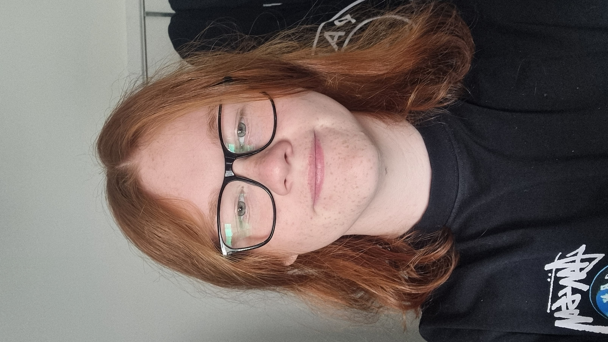

WELCOME
Welcome to Refill Studios, an indie dev team based in Wales, dedicated to creating games that entertain, engage, and leave a lasting impression. What started as a small passion project has grown into a creative outlet where ideas are constantly being explored and brought to life through interactive experiences. This Site Aims to create a community of those who enjoy game development and want to interact with others like themselves!
OUR GOAL
We hope to be able to create games that people everywhere are able to enjoy, we also hope that our creativity and uniqueness in style shine through above all other aspects, with the objective of fun being a given for any game made by us.
OUR TEAM
We consist of very few members that help with programming, art, music, sound effects and concepting new ideas to bring to life through the games we make, though most of the games you will see under our name were created alone by Brooklyn Thomas and Reji.
OUR HISTORY
Formed in Early 2021 and based in Wales, Refill Studios has remained a small indie game team with a small number of games avaliable on itch.io such as: SQUARE UP, SCHOOL FIGHTER and BOWLING FRIENDS, which is currently being remade, and a new upcoming game for our first steam release being DONUTZ.

"Im glad to be part of a team that we hope will bring you fun,
creating games is a dream for me so to have this position
drives me to bring you the best experiences."
-dev team leader, Brooklyn Thomas
Contact Us
refillstudios@gmail.com